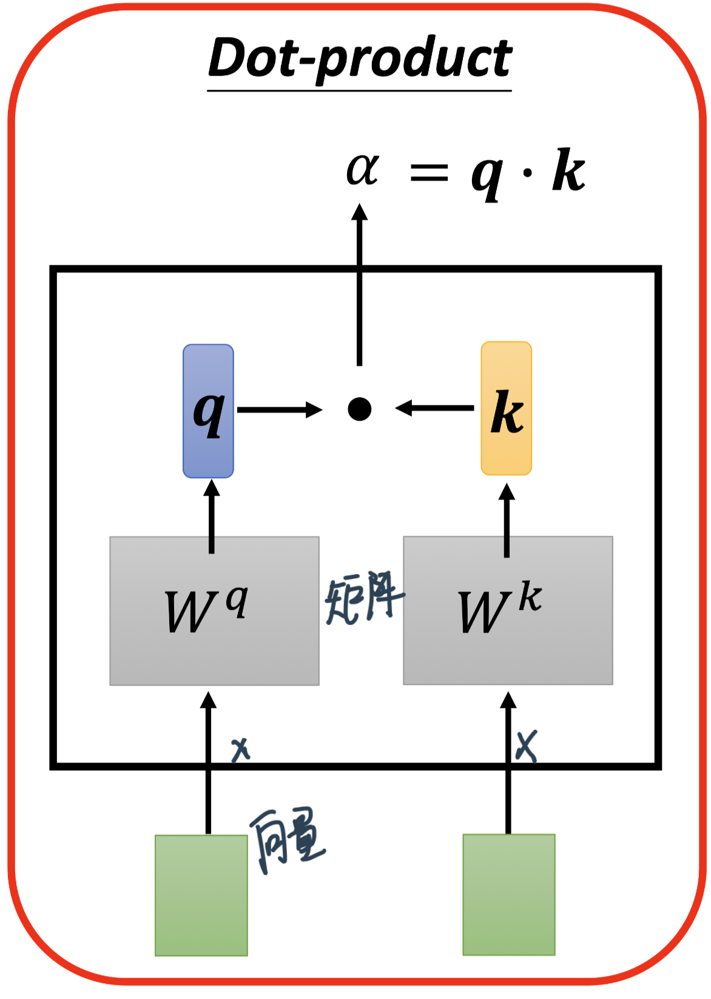
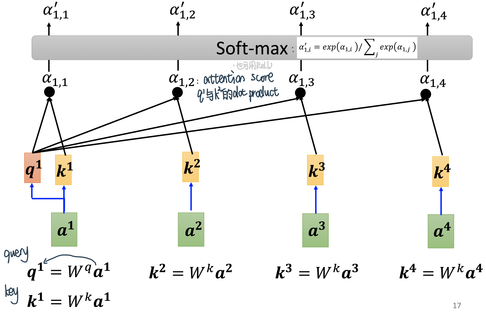
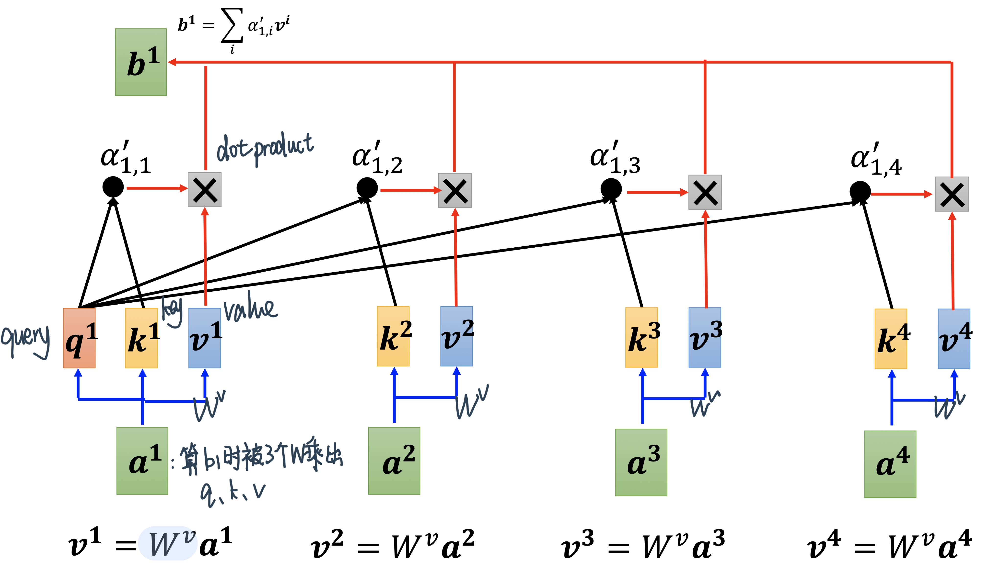
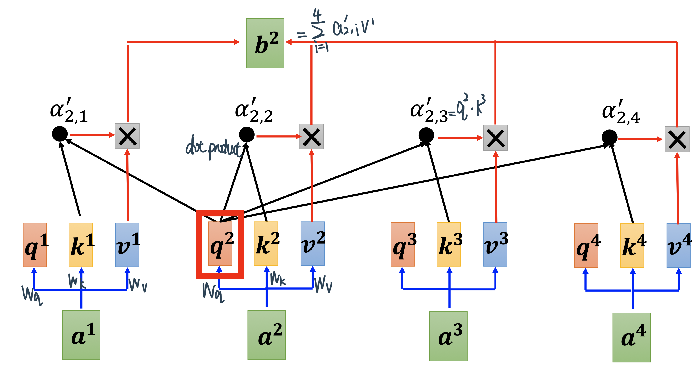
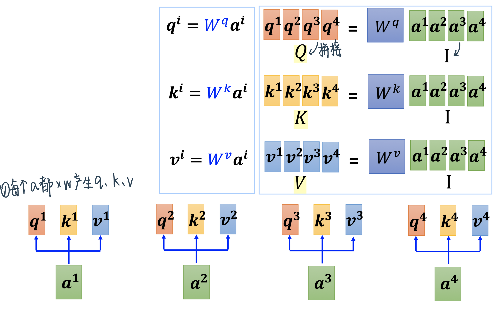
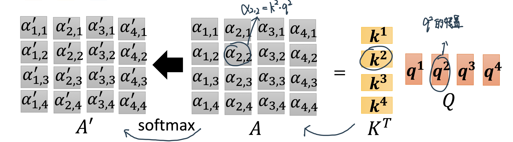
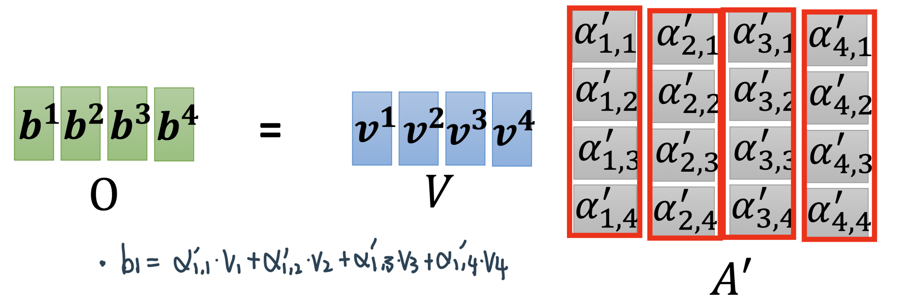

Self-Attention
Contents
Self-Attention¶
背景¶
Sophisticated Input¶
Input可以看做 / Ouput可以分成这几类
CNN里面还特别强调了CV输入的图片大小都是一样的，那现在假设每次我们Model输入的不一样就叫Sequence，Sequence的长度都不一样
Vector-Vector: 输入是一个向量，然后我们的输出,可能是一个数值,这个是Regression,可能是一个类别,这是Classification
Vector-Sequence: 比如Image captioning——input图像，output一句话

Sequence-Vector: 比如输入Movie Review，输出评价
Sequence- Sequence：比如机器翻译
把Sequence转换成input的方法¶
文字：
one-hot：开一个很长很长的向量,这个向量的长度跟世界上存在的词汇的数目是一样多的,每一个维度对应到一个词汇,Apple就是100,Bag就是010,Cat就是001,以此类推
但是这样子的表示方法有一个非常严重的问题,它假设所有的词汇彼此之间都是没有关係的,从这个向量裡面你看不到：Cat跟Dog都是动物所以他们比较接近,Cat跟Apple一个动物一个植物,所以他们比较不相像。这个向量裡面,没有任何语义的资讯
另外一个方法叫做Word Embedding：给每一个词汇一个向量,而这个向量是有语义的资讯的
如果你把Word Embedding画出来的话,你会发现,所有的动物可能聚集成一团,所有的植物可能聚集成一团,所有的动词可能聚集成一团等等
Word Embedding,会给每一个词汇一个向量,而一个句子就是一排长度不一的向量
声音信号：声音讯号其实是一排向量，我们会把一段声音讯号取一个范围叫Window
把这个Window面的信息描述成一个向量，就叫做一个Frame，语音上会把一个向量叫做一个Frame

通常这个Window的长度就是25个Millisecond
一小段25个Millisecond里面的语音讯号,為了要描述一整段的声音讯号,你会把这个Window往右移一点，从而形成了一段向量

通常移动的大小是10个Millisecond
图：一个Graph/图也是一堆向量，如Social Network

在Social Network上面每一个节点就是一个人,然后节点跟节点之间的edge就是他们两个的关系连接,比如说是不是朋友等等
而每一个节点可以看作是一个向量,你可以拿每一个人的,比如说他的Profile裡面的资讯啊,他的性别啊 他的年龄啊,他的工作啊 他讲过的话啊等等,把这些资讯用一个向量来表示
所以一个Social Network 一个Graph,你也可以看做是一堆的向量所组成的
分子信息：一个分子也可以看作是一个Graph

一个分子可以看作是一个Graph,分子上面的每一个球,也就是每一个原子，可以表述成一个向量
一个原子可以用One-Hot Vector来表示,氢就是1000,碳就是0100,然后这个氧就是0010,所以一个分子就是一个Graph,它就是一堆向量。
输出Output¶
每一个向量都有一个对应的Label：输入是四个向量的时候,它就要输出四个Label,而每一个Label,它可能是一个数值,那就是Regression的问题,如果每个Label是一个Class,那就是一个Classification的问题

文字处理：假设你今天要做的是POS Tagging,POS Tagging就是词性标註,你要让机器自动决定每一个词汇 它是什麼样的词性,它是名词 还是动词 还是形容词等等
这个任务啊,其实并没有很容易,举例来说,你现在看到一个句子,I saw a saw，这并不是打错,并不是“我看一个看”,而是“我看到一个锯子”,这个第二个saw当名词用的时候,它是锯子，那所以机器要知道,第一个saw是个动词,第二个saw虽然它也是个saw,但它是名词,但是每一个输入的词汇,都要有一个对应的输出的词性，这个任务就是,输入跟输出的长度是一样的Case,这个就是属於第一个类型的输出
语音：每个vector来看音标
Social Network：决定每个节点的特性，比如说他会不会买某一个商品,这样我们才知道说,要不要推荐某一个商品给他,
一整个Sequence，只需要输出一个Label

文字：Sentiment Analysis给机器看一段话,它要决定说这段话是正面的还是负面的
语音：机器要听一段声音,然后决定他是谁讲的
Graph：给一个分子,然后要预测说这个分子,比如说它有没有毒性,或者是它的亲水性如何
机器要自己决定,应该要输出多少个Label
我们不知道应该输出多少个Label,机器要自己决定,应该要输出多少个Label,可能你输入是N个向量,输出可能是N’个Label,為什麼是N’,机器自己决定，这种任务又叫做sequence to sequence的任务！
翻译就是sequence to sequence的任务,因為输入输出是不同的语言,它们的词汇的数目本来就不会一样多
或者是语音辨识也是,真正的语音辨识也是一个sequence to sequence的任务,输入一句话,然后输出一段文字,这也是一个sequence to sequence的任务
Sequence Labeling¶
输入跟输出数目一样多的状况又叫做Sequence Labeling,你要给Sequence裡面的每一个向量,都给它一个Label。
直觉的想法1: 拿个Fully-Connected的Network，但对、词性标记的问题，你给机器一个句子,I saw a saw,对Fully-Connected Network来说,后面这一个saw跟前面这个saw完全一模一样,它们是同一个词汇啊，所以会输出一样的东西！
直觉的想法2: 所以，要让让Fully-Connected的Network,考虑context,就把前后几个向量都串起来,一起丢到Fully-Connected的Network**

但是这样子的方法还是有极限，比如对于需要考虑一整个Sequence才能够解决的任务，由于Sequence有长有短，不能通过继续开大Window来做！或者是开一个比最大Sequence大一点的Window
但是你开一个这麼大的Window,意味著说你的Fully-Connected的Network需要非常多的参数,那可能不只运算量很大,可能还容易Overfitting
Self-Attention过程¶
整体的运作效果¶
Self-Attention的运作方式就是,Self-Attention会吃一整个Sequence的资讯，输入4个Vector,它就Output 4个Vector，这4个Vector,他们都是考虑一整个Sequence以后才得到的**，然后再进Fully-Connected的Network决定要输出什麼样的结果，这个就是Self-Attention。
Self-Attention不是只能用一次,你可以叠加很多次

可以把Fully-Connected的Network,跟Self-Attention交替使用
Self-Attention处理整个Sequence的资讯，Fully-Connected的Network,专注於处理某一个位置的资讯
再用Self-Attention,再把整个Sequence资讯再处理一次
有关Self-Attention，最知名的相关的文章,就是《Attention is all you need》也就是提出了Transformer的Network架构！
普通Self-Attention¶
那接下来呢就是要跟大家说明,怎麼產生\(b^1\)这个向量,那你知道怎麼產生\(b^1\)这个向量以后,你就知道怎麼產生剩下\(b^1 b^2 b^3 b^4\)剩下的向量

我们需要根据根据\(a^1\)这个向量，找出整个很长的sequence裡面哪些部分跟判断\(a^1\)是哪一个label是有关係的
每一个向量跟\(a^1\)的关联的程度,用一个数值叫α来表示。Transformer里面用的是dot product,输入的这两个向量分别乘上两个不同的矩阵，再做element-wise 的相乘后全部加起来以后就得到一个scalar，这个scalar就是α

计算出\(b_1\)
Step1：先算出一个Input sequence中的关联性再取Soft-max，从而知道了整个Sequence里面哪些跟\(\alpha_{1}\)是最相关的——
attention score 需要α的人出\(q\)，其他人出\(k\)
Step2：从attention score中进一步抽取资讯：用attention score来weighted sum 四个value
 如果说某个向量它得到的分数越高，比如：
\(a^1\)跟\(a^2\)的关联性很强⇒\(α'_{1, 2}\)就会很大得到的值
⇒在Weighted Sum中\(α'_{1, 2}\)dominate⇒得到的\(b^1\)的值会比较接近\(v^2\)
计算出\(b_2\)：也是一样的步骤
Step 1 / 2：先算出一个Input sequence中的关联性再取Soft-max，从而知道了整个Sequence里面哪些跟\(\alpha_{2}\)是最相关的，然后再用这些attention score来weighted sum四个value

矩阵并行计算出四个\(b\)
整体过程：I乘W得到QKV、K乘Q得到Attention Matrix、V乘Attention Matrix得到O，也就是
只有W需要学习
Step 1：转换输入——输入Sequence中的每一个\(a\)拼成\(I\)后分别乘\(W\) \(\rightarrow\) \(Q、K、V\)
 Step 2：\(K\)和\(Q\)得到attention score矩阵\(A\)
 Step 3：用\(\alpha^{\prime}\)当权平均\(v\)得到\(B\)

Multi-head Self-attention¶
Self-attention用q去找相关的k，但是相关会有不同的形式，我们可能需要多个q，不同的 q 负责不同种类的相关性
核心区别点：b有多个
计算出\(b_i\)
Step 1：计算出每个head对应的b
Step 2：再用一个矩阵得到b
Positional Encoding¶
No position information in self-attention¶
Self-attention的layer它少了位置的概念，input中的a1 a2 a3其实完全没有差别，做的操作是一摸一样的——所有的位置之间的距离都是一样的：没有任何一个位置距离比较远、没有任何位置距离比较近、没有谁在整个 sequence 的最前面,也没有谁在整个 sequence 的最后面
但是这样子设计可能会有一些问题,因為有时候位置的资讯也许很重要,举例来说,我们在做这个 POS tagging,就是词性标记的时候,也许你知道说动词比较不容易出现在句首,所以如果我们知道说,某一个词汇它是放在句首的,那它是动词的可能性可能就比较低,这样子的位置的资讯往往也是有用的！
Each positon has a unique positional vector \(e^i\)¶
可是在我们到目前為止,讲的 Self-attention 的操作裡面,根本就没有位置的资讯,所以怎麼办呢,所以你做 Self-attention 的时候,如果你觉得位置的资讯是一个重要的事情,那你可以把位置的资讯把它塞进去,怎麼把位置的资讯塞进去呢,这边就要用到一个叫做,positional encoding 的技术

你為每一个位置设定一个 vector,叫做 positional vector,这边用 \(e^i\) 来表示,上标 i 代表是位置,每一个不同的位置,就有不同的 vector,就是 \(e^1\) 是一个 vector,\(e^2\) 是一个vector,\(e^{128}\) 是一个vector,不同的位置都有一个它专属的 e,然后把这个 e 加到 \(a^i\) 上面,就结束了
就是告诉你的 Self-attention,位置的资讯,如果它看到说 \(a^i\) 好像有被加上 \( e^i\),它就知道说现在出现的位置,应该是在 i 这个位置
最早的这个 transformer,就 Attention Is All You Need 那篇 paper 裡面,它用的 \( e^i\)长的是这个样子

每一个 column 就代表一个 e，第一个位置就是 \(e^1\),第二个位置就是 \(e^2\),第三个位置就是 \(e^3\),以此类推
所以它就是把这边这个向量,放在第一个位置,把这个向量加到第二个位置的 a上,把这个向量加到第三个位置的 a 上,以此类推,每一个位置都有一个专属的 e,希望透过给每一个位置不同的 e,你的 model 在处理这个 input 的时候,它可以知道现在的 input,它的位置的资讯是什麼样子
Hand-crafted or Learned from data¶
这样子的 positional vector,它是 handcrafted 的,也就是它是人设的,那人设的这个 vector 有很多问题,就假设我现在在定这个 vector 的时候,只定到 128,那我现在 sequence 的长度,如果是 129 怎麼办呢
不过在最早的那个,Attention Is All You Need paper裡面,没有这个问题,它 vector 是透过某一个规则所產生的,透过一个很神奇的sin cos 的 function 所產生的
其实你不一定要这麼產生, positional encoding仍然是一个尚待研究的问题,你可以创造自己新的方法,或甚至 positional encoding,是可以根据资料学出来的
那有关 positional encoding,你可以再参考一下文献,这个是一个尚待研究的问题,比如说我这边引用了一篇,这个是去年放在 arxiv 上的论文,所以可以想见这其实都是很新的论文

裡面就是比较了跟提出了,新的 positional encoding
比如说这个是最早的 positional encoding,它是用一个神奇的 sin function 所產生的
那如果你的 positional encoding,你把 positional encoding 裡面的数值,当作 network 参数的一部分,直接 learn 出来,看起来是这个样子的,这个图是那个横著看的,它是横著看的,它是每一个 row,代表一个 position,好 所以这个是这个最原始的,用 sin function 產生的,这个是 learn 出来的
它裡面又有神奇的做法,比如说这个,这个是用 RNN 生出来的,positional encording 是用 RNN 出来的,这篇 paper 提出来的叫做 FLOATER,是用个神奇的 network 生出来的,
总之你有各式各样不同的方法,来產生 positional encoding,那目前我们还不知道哪一种方法最好,这是一个尚待研究中的问题,所以你不用纠结说,為什麼 Sinusoidal 最好,你永远可以提出新的做法
应用¶
常见：transformer、BERT 裡面也用到 Self-attention,所以 Self-attention 在 NLP 上面的应用,是大家都耳熟能详的
Speech：做语音的时候,你也可以用 Self-attention,不过在做语音的时候,你可能会对 Self-attention,做一些小小的改动。因為一般语音的,如果你要把一段声音讯号,表示成一排向量的话,这排向量可能会非常地长,

而每一个向量,其实只代表了 10 millisecond 的长度而已,所以如果今天是 1 秒鐘的声音讯号,它就有 100 个向量了,5 秒鐘的声音讯号,就 500 个向量了,你随便讲一句话,都是上千个向量了
所以一段声音讯号,你要描述它的时候,那个像这个 vector 的 sequence 它的长度是非常可观的,那可观的 sequence,可观的长度,会造成什麼问题呢
你想想看,我们今天在计算这个 attention matrix 的时候,它的 计算complexity 是长度的平方

计算这个 attention matrix A′你需要做 L 乘以 L 次的 inner product,那如果这个 L 的值很大的话,它的计算量就很可观,你也需要很大的这个 memory,才能够把这个矩阵存下来
所以今天如果在做语音辨识的时候,一句话所產生的这个 attention matrix,可能会太大,大到你根本就不容易处理,不容易训练,所以怎麼办呢
在做语音的时候,有一招叫做 Truncated Self-attention

Truncated Self-attention 做的事情就是,我们今天在做 Self-attention 的时候,不要看一整句话,就我们就只看一个小的范围就好
那至於这个范围应该要多大,那个是人设定的
那為什麼我们知道说,今天在做语音辨识的时候,也许只需要看一个小的范围就好,那就是取决於你对这个问题的理解,也许我们要辨识这个位置有什麼样的phoneme,这个位置有什麼样的内容,我们并不需要看整句话,只要看这句话,跟它前后一定范围之内的资讯,其实就可以判断
所以如果在做 Self-attention 的时候,也许没有必要看过一整个句子,也许没有必要让 Self-attention 考虑一整个句子,也许只需要考虑一个小范围就好,这样就可以加快运算的速度，这个是 Truncated Self-attention,
Self-attention for Image¶
那其实 Self-attention ,还可以被用在影像上,Self-attention
那到目前為止,我们在讲 Self-attention 的时候,我们都说 Self-attention 适用的范围是：输入是一个 vector set 的时候
一张图片啊,我们把它看作是一个很长的向量,那其实一张图片,我们也可以换一个观点,把它看作是一个 vector 的 set

这个是一个解析度 5 乘以 10 的图片,那这一张图片呢,可以看作是一个 tensor,这个 tensor 的大小是 5 乘以 10 乘以 3,3 代表 RGB 这 3 个 channel
你可以把每一个位置的 pixel,看作是一个三维的向量,所以每一个 pixel,其实就是一个三维的向量,那整张图片,其实就是 5 乘以 10 个向量的set
所以我们其实可以换一个角度,影像这个东西,其实也是一个 vector set,它既然也是一个 vector set 的话,你完全可以用 Self-attention 来处理一张图片,那有没有人用 Self-attention 来处理一张图片呢,是有的

那这边就举了两个例子,来给大家参考,那现在把 Self-attention 用在影像处理上,也不算是一个非常石破天惊的事情,
Self-attention v.s. CNN：
我们可以来比较一下,Self-attention 跟 CNN 之间,有什麼样的差异或者是关联性
如果我们今天,是用 Self-attention 来处理一张图片,代表说,假设这个是你要考虑的 pixel,那它產生 query,其他 pixel 產生 key,

你今天在做 inner product 的时候,你考虑的不是一个小的receptive field的信息,而是整张影像的资讯
但是今天在做 CNN 的时候,,会画出一个 receptive field,每一个 filter,每一个 neural,只考虑 receptive field 范围裡面的资讯

所以如果我们比较 CNN 跟 Self-attention 的话,CNN 可以看作是一种简化版的 Self-attention，因為在做CNN的时候,我们只考虑 receptive field 裡面的资讯,而在做 Self-attention 的时候,我们是考虑整张图片的资讯,所以 CNN,是简化版的 Self-attention
或者是你可以反过来说,Self-attention 是一个复杂化的 CNN
在 CNN 裡面,我们要划定 receptive field,每一个 neural,只考虑 receptive field 裡面的资讯,而 receptive field 的范围跟大小,是人决定的,
而对 Self-attention 而言,我们用 attention,去找出相关的 pixel,就好像是 receptive field 是自动被学出的,network 自己决定说,receptive field 的形状长什麼样子,network 自己决定说,以这个 pixel 為中心,哪些 pixel 是我们真正需要考虑的,那些 pixel 是相关的
所以 receptive field 的范围,不再是人工划定,而是让机器自己学出来
其实你可以读一篇 paper,叫做 On the Relationship,between Self-attention and Convolutional Layers

在这篇 paper 裡面,会用数学的方式严谨的告诉你说,其实这个 CNN就是 Self-attention 的特例,Self-attention 只要设定合适的参数,它可以做到跟 CNN 一模一样的事情
所以 self attention,是更 flexible 的 CNN,而 CNN 是有受限制的 Self-attention,Self-attention 只要透过某些设计,某些限制,它就会变成 CNN

那这也不是很旧的 paper,你发现它放到网路上的时间呢,是 19 年的 11 月,所以你知道这些,我们今天上课裡面讲的东西,其实都是很新的资讯
既然Self-attention 比较 flexible,之前有讲说比较 flexible 的 model,比较需要更多的 data,如果你 data 不够,就有可能 overfitting
而小的 model,而比较有限制的 model,它适合在 data 小的,少的时候,它可能比较不会 overfitting,那如果你这个限制设的好,也会有不错的结果
如果你今天用不同的 data 量,来训练 CNN 跟 Self-attention,你确实可以看到我刚才讲的现象

那这个实验结果,来自於 An image is worth 16 乘以 16 的 words,这个是 Google 的 paper,它就是把这个 Self-attention,apply 在影像上面
那其实把一张影像呢,拆成 16 乘以 16 个 patch,它把每一个 patch想像成是一个 word,因為一般我们这个 Self-attention,比较常用在 NLP 上面,所以他就说,想像每一个 patch 其实就是一个 word,所以他就取了一个很 fancy 的 title,叫做一张图呢,值 16 乘以 16 个文字
横轴是训练的影像的量,那你发现说,对 Google 来说 用的,所谓的资料量比较少,也是你没有办法用的资料量啦这边有 10 个 million 就是,1000 万张图,是资料量比较小的 setting,然后资料量比较大的 setting 呢,有 3 亿张图片,在这个实验裡面呢,比较了 Self-attention 是浅蓝色的这一条线,跟 CNN 是深灰色的这条线
就会发现说,随著资料量越来越多,那 Self-attention 的结果就越来越好,最终在资料量最多的时候,Self-attention 可以超过 CNN,但在资料量少的时候,CNN 它是可以比 Self-attention,得到更好的结果的
那為什麼会这样,你就可以从 CNN 跟 Self-attention,它们的弹性来加以解释
Self-attention 它弹性比较大,所以需要比较多的训练资料,训练资料少的时候,就会 overfitting
而 CNN 它弹性比较小,在训练资料少的时候,结果比较好,但训练资料多的时候,它没有办法从更大量的训练资料得到好处
所以这个就是 Self-attention 跟 CNN 的比较，那 Self-attention 跟 CNN,谁比较好呢,我应该选哪一个呢,事实上你也可以都用,在我们作业四裡面,如果你要做 strong baseline 的话,就特别给你一个提示,就是用 conformer,裡面就是有用到 Self-attention,也有用到 CNN
Self-attention v.s. RNN¶
我们来比较一下,Self-attention 跟 RNN,RNN就是 recurrent neural network,这门课裡面现在就不会讲到 recurrent neural network,因為 recurrent neural network 的角色,很大一部分都可以用 Self-attention 来取代了,
但是 RNN 是什麼呢,假设你想知道的话,那这边很快地三言两语把它带过去,RNN 跟 Self-attention 一样,都是要处理 input 是一个 sequence 的状况

在 RNN 裡面呢
左边是你的 input sequence,你有一个 memory 的 vector
然后你有一个 RNN 的 block,这个 RNN 的 block 呢,它吃 memory 的 vector,吃第一个 input 的 vector
然后 output 一个东西,然后根据这个 output 的东西,我们通常叫做这个 hidden,这个 hidden 的 layer 的 output
然后通过这个 fully connected network,然后再去做你想要的 prediction
接下来当sequence 裡面,第二个 vector 作為 input 的时候,也会把前一个时间点吐出来的东西,当做下一个时间点的输入,再丢进 RNN 裡面,然后再產生新的 vector,再拿去给 fully connected network
然后第三个 vector 进来的时候,你把第三个 vector 跟前一个时间点的输出,一起丢进 RNN,再產生新的输出,然后在第四个时间点
第四个 vector 输入的时候,把第四个 vector 跟前一个时间点,產生出来的输出,再一起做处理,得到新的输出,再通过 fully connected network 的 layer,这个就是 RNN
Recurrent Neural Network跟 Self-attention 做的事情其实也非常像,它们的 input 都是一个 vector sequence

Self-attention output 是另外一个 vector sequence,这裡面的每一个 vector,都考虑了整个 input sequence 以后,再给 fully connected network 去做处理
那 RNN 呢,它也会 output 另外一群 vector,这另外一排 vector 也会给,fully connected network 做进一步的处理,那 Self-attention 跟 RNN 有什麼不同呢
当然一个非常显而易见的不同,你可能会说,这边的每一个 vector,它都考虑了整个 input 的 sequence,而RNN 每一个 vector,只考虑了左边已经输入的 vector,它没有考虑右边的 vector
但是 RNN 其实也可以是双向的,所以如果你 RNN 用双向的 RNN 的话,其实这边的每一个 hidden 的 output,每一个 memory 的 output,其实也可以看作是考虑了整个 input 的 sequence
但是假设我们把 RNN 的 output,跟 Self-attention 的 output 拿来做对比的话,就算你用 bidirectional 的 RNN,还是有一些差别的
对 RNN 来说,假设最右边这个黄色的 vector,要考虑最左边的这个输入,那它必须要把最左边的输入存在 memory 裡面,然后接下来都不能够忘掉,一路带到最右边,才能够在最后一个时间点被考虑
但对 Self-attention 来说没有这个问题,它只要这边输出一个 query,这边输出一个 key,只要它们 match 得起来,天涯若比邻,你可以从非常远的 vector,在整个 sequence 上非常远的 vector,轻易地抽取资讯,所以这是 RNN 跟 Self-attention,一个不一样的地方
还有另外一个更主要的不同是,RNN 今天在处理的时候, input 一排 sequence,output 一排 sequence 的时候,RNN 是没有办法平行化的

RNN 它今天 input 一排是 vector,output 另外一排 vector 的时候,它没有办法一次处理,没有办法平行处理所有的 output
但 Self-attention 有一个优势,是它可以平行处理所有的输出,你今天 input 一排 vector,再 output 这四个 vector 的时候,这四个 vector 是平行產生的,并不需要等谁先运算完才把其他运算出来,output 的这个 vector,裡面的 output 这个 vector sequence 裡面,每一个 vector 都是同时產生出来的
所以在运算速度上,Self-attention 会比 RNN 更有效率
那你今天发现说,很多的应用都往往把 RNN 的架构,逐渐改成 Self-attention 的架构了,如果你想要更进一步了解,RNN 跟 Self-attention 的关係的话,你可以看下面这篇文章,Transformers are RNNs,裡面会告诉你说,Self-attention 你加上了什麼东西以后,其实它就变成了 RNN,发现说这也不是很旧的 paper,这个是去年的六月放到 arXiv 上
所以今天讲的都是一些很新的研究成果,那 RNN 的部分呢,我们这门课就不会提到,假设你对 RNN 有兴趣的话,以下是这一门课之前的上课录影,那 RNN 的部分,因為这一次不会讲到,所以特别有做了英文的版本,RNN 呢 是中文英文版本,都同时有放在 YouTube 上面

Self-attention for Graph¶
Graph 也可以看作是一堆 vector,那如果是一堆 vector,就可以用 Self-attention 来处理,所以 Self-attention 也可以用在 Graph 上面,但是当我们把 Self-attention,用在Graph 上面的时候,有什麼样特别的地方呢,、

在 Graph 上面,每一个 node 可以表示成一个向量,但不只有 node 的资讯,还有 edge 的资讯,我们知道哪些 node 之间是有相连的,也就是哪些 node 是有关联的
我们知道哪些向量间是有关联,那之前我们在做 Self-attention 的时候,所谓的关联性是 network 自己找出来的,但是现在既然有了 Graph 的资讯,有了 edge 的资讯,那关联性也许就不需要透过机器自动找出来,这个图上面的 edge 已经暗示了我们,node 跟 node 之间的关联性
所以今天当你把 Self-attention,用在 Graph 上面的时候,你有一个选择是你在做这个,Attention Matrix 计算的时候,你可以只计算有 edge 相连的 node 就好
举例来说在这个图上,node 1 跟 node 8 有相连,那我们只需要计算 node 1 跟 node 8,这两个向量之间的 attention 的分数,那 1 跟 6 相连,所以只有 1 跟 6 之间,需要计算 attention 的分数,1 跟 5 有相连,所以只有 1 跟 5 需要计算 attention 的分数,2 跟 3 有相连,所以只有 2 跟 3 需要计算 attention 的分数,以此类推
那如果两个 node 之间没有相连,那其实很有可能就暗示我们,这两个 node 之间没有关係,既然没有关係,我们就不需要再去计算它的 attention score,直接把它设為 0 就好了
因為这个 Graph 往往是人為根据某些 domain knowledge 建出来的,那 domain knowledge 告诉我们说,这两个向量彼此之间没有关联,我们就没有必要再用机器去学习这件事情
其实当我们把 Self-attention,按照我们这边讲的这种限制,用在 Graph 上面的时候,其实就是一种 Graph Neural Network,也就是一种 GNN
那我知道 GNN,现在也是一个很 fancy 的题目,那我不会说 Self-attention 就要囊括了,所有 GNN 的各种变形了,但把 Self-attention 用在 Graph 上面,是某一种类型的 Graph Neural Network,那这边呢,一样我们也没有办法细讲了,GNN 这边坑也是很深啊,这边水是很深,那就放一下助教之前上课的连结

大概花了快三个小时,在讲 Graph Neural Network,而且其实还没有讲完,就告诉你说这个 Graph Neural Network,也是有非常深的技术,这边水也是很深,那这不是我们今天这一堂课可以讲的内容,好
More¶
其实Self-attention 有非常非常多的变形,你可以看一篇 paper 叫做,Long Range Arena,裡面比较了各种不同的 Self-attention 的变形

因為 Self-attention 它最大的问题就是,它的运算量非常地大,所以怎麼样减少 Self-attention 的运算量,是一个未来的重点,可以看到这边有,各种各式各样 Self-attention 的变形
Self-attention 最早是,用在 Transformer 上面,所以很多人讲 Transformer 的时候,其实它指的就是这个 Self-attention,有人说广义的 Transformer,指的就是 Self-attention,那所以后来各式各样的,Self-attention 的变形都这样做,都叫做是什麼 former,比如说 Linformer Performer Reformer 等等,所以 Self-attention 的变形,现在都叫做 xxformer
那可以看到，往右代表它运算的速度,所以有很多各式各样新的 xxformer,它们的速度会比原来的 Transformer 快,但是快的速度带来的就是 performance 变差
这个纵轴代表是 performance,所以它们往往比原来的 Transformer,performance 差一点,但是速度会比较快
那到底什麼样的 Self-attention,才能够真的又快又好,这仍然是一个尚待研究的问题,如果你对 Self-attention,想要进一步研究的话,你还可以看一下,Efficient Transformers: A Survey 这篇 paper,裡面会跟你介绍,各式各样 Self-attention 的变形。